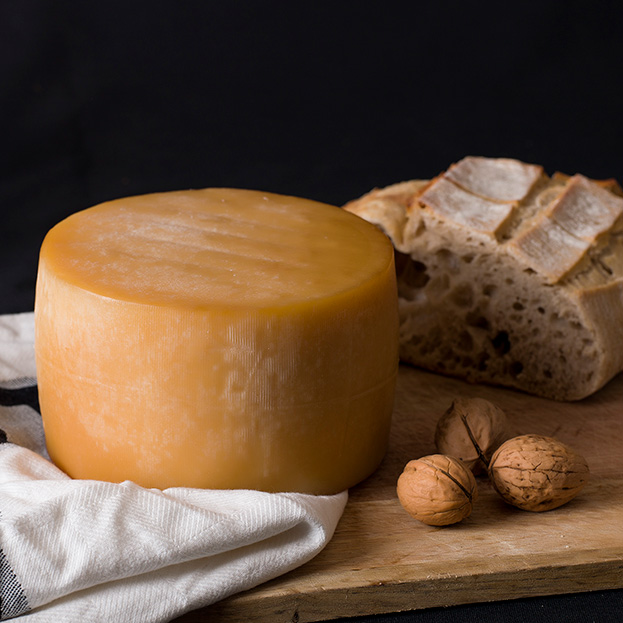
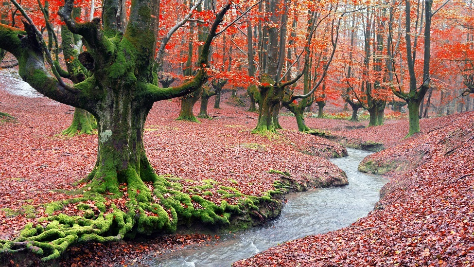
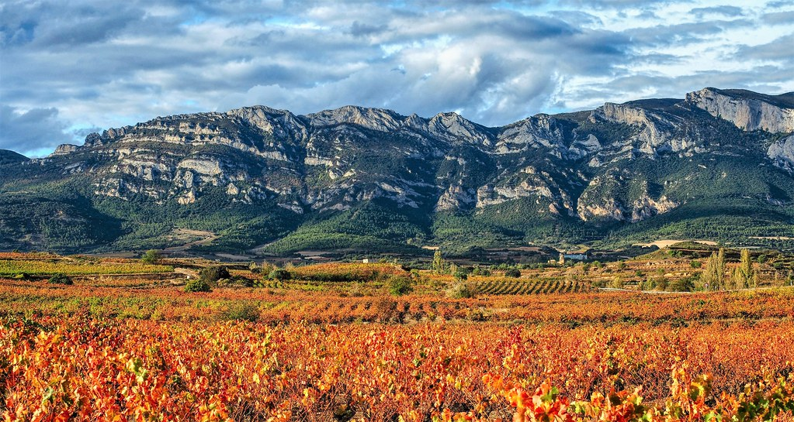

Gorbea y el Queso Idiazabal de Zuia
Ascensión a la cima del Gorbea combinada con visitas a queserías y comercios artesanales de Zuia.
Ver detallesSiente la naturaleza, recorre nuestros senderos y apoya a los comercios, mercados y productores de nuestras cuadrillas.
Explorar RutasLos montes de Álava constituyen un patrimonio natural único que conecta valles, parques naturales y pequeñas comunidades rurales. Promover el senderismo responsable no solo implica disfrutar de cimas emblemáticas como el Gorbea o el Toloño, sino también dinamizar la economía de los pueblos que nos reciben al descender de la montaña.
Comprar en los pequeños comercios de montaña, degustar el Queso Idiazabal de la zona y consumir productos frescos de las cuadrillas alavesas garantiza la supervivencia del tejido comercial tradicional. Cada visita a un mercado de productores Km0 contribuye a mantener vivas las tradiciones locales y la sostenibilidad del medio rural.
El programa Pasaporte Montañero vincula las rutas de senderismo con descuentos en tiendas de barrio, alojamientos rurales y queserías de las cuadrillas de Zuia, la Llanada Alavesa, la Montaña Alavesa y la Rioja Alavesa. ¡Suma pasos en tus botas y apoya el comercio de proximidad!

Ascensión a la cima del Gorbea combinada con visitas a queserías y comercios artesanales de Zuia.
Ver detalles
Senderismo entre hayas centenarias y apoyo al pequeño comercio de los pueblos de la Llanada Alavesa.
Ver detalles
Ruta por las crestas de la Sierra de Cantabria y parada en las tiendas tradicionales de Rioja Alavesa.
Ver detalles